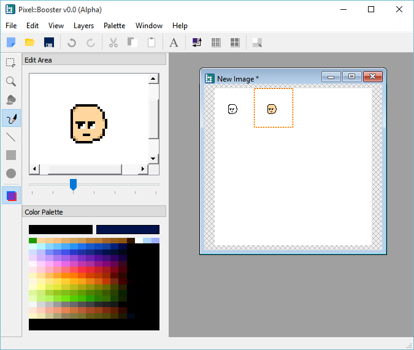

The Project
Pixel::Booster is going to be an easy to use and powerful software for pixel artists. The software is being developed using C++11 and Qt5.5.1. It will feature tools used by known and approved programs used by multiple projects over the past decades, but also modern features to help creating assets for games and animations faster and more comfortably. Pixel::Booster will be entirely free and open source forever. This means the community can improve the software by suggesting new features and fixing bugs! Latest Release: Version 0.01 Alpha
Currently there are only binaries for Windows (x86 and x64). For other platforms, you may download the source code and compile the project. Please, help us to improve the software by reporting any errors at our github page!Planned Features
Here are some of the features currently planned for future releases of the software. Features marked by (✓) are currently implemented in the source code. For the features on each version, check the respective release notes.Previous Version - v0.0 (Alpha)
- Create new images ✓
- Load existing images ✓
- Transfer image from canvas to edit area ✓
- Transfer image from edit area to canvas ✓
- Pencil Tool ✓
- Color Pick ✓
- Save image (png, jpg, bmp) ✓
- 32 color bit image format only ✓
- Language Options (Portuguese and English only for now) ✓
- Set tile size ✓
- Toggle Transparency from pick and paste mode. ✓
- Save app state through multiple executions. ✓
- Basic Static Color Palette ✓
Current Version - v0.01 (Alpha)
- Line Tool ✓
- Ellipse Tool ✓
- Rectangle Tool ✓
- Flood Fill (Bucket) Tool ✓
Upcoming Features (Before v1.0 Beta)
- Select new image color on dialog ✓
- Limited Undo/Redo ✓
-
Support for other image extensions ✓
(*.png *.bmp *.jpg *.jpeg *.pbm *.pgm *.ppm *.tiff *.xbm *.xpm) - Improved Color Palette Options (Save/Load)
- Text Tool
- Zoom
- Selection Tool
- Copy
- Paste
- Show grid
- Show Divisions
- Change Image Size
- Resize
- Shift Selection
- Different image formats (8 bit indexed and 32 bit)
- Palette for different Modes (Indexed, 32 bit)
- Animate Sprites
- Advanced Undo/Redo
Possible Features
- Animation Export (.gif)
- Voxel Image Editor
- Project File (Program specific settings)
- Multi Layer edit mode
Developers
Authors
- Ricardo Bustamante (@RicardoBusta)